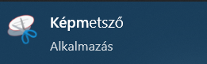
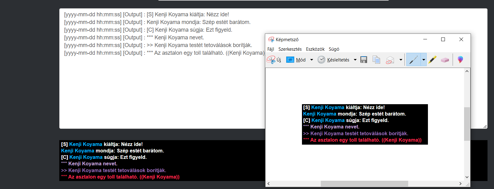
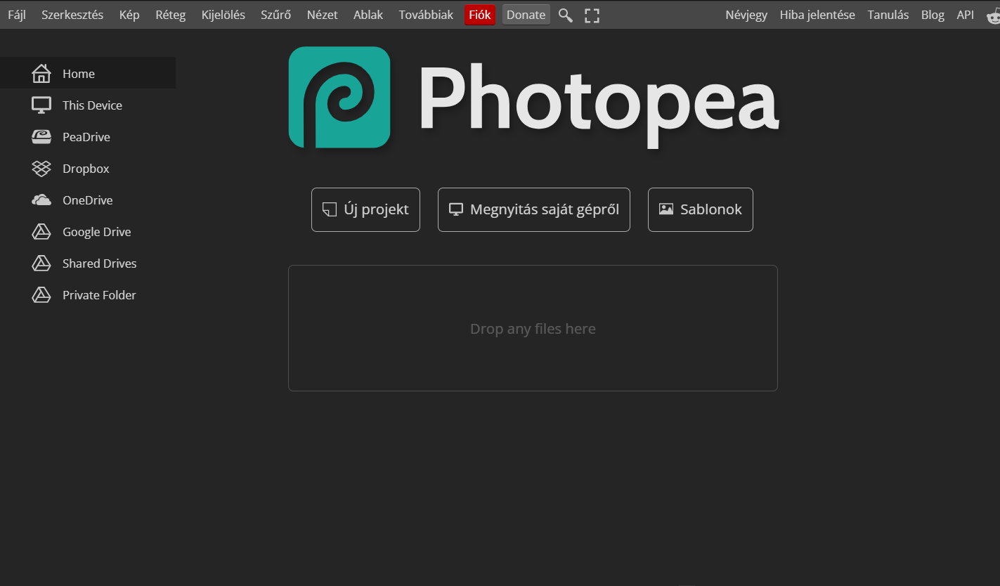
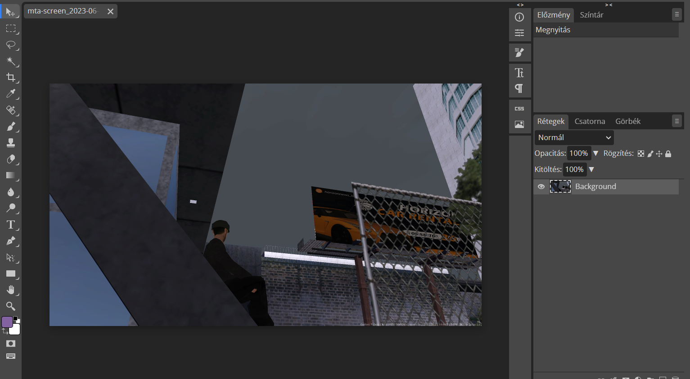
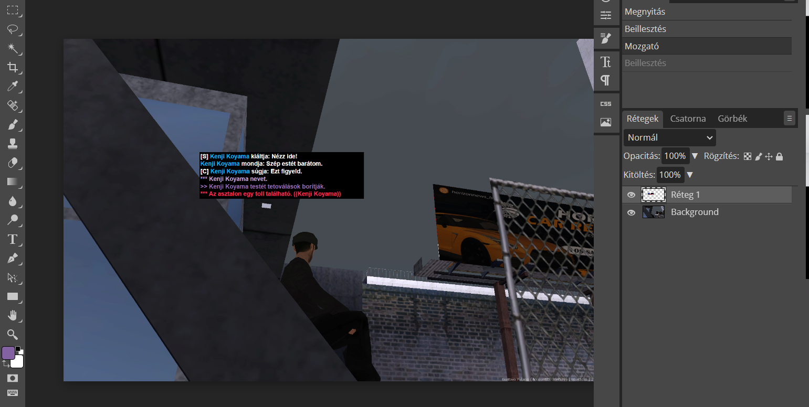
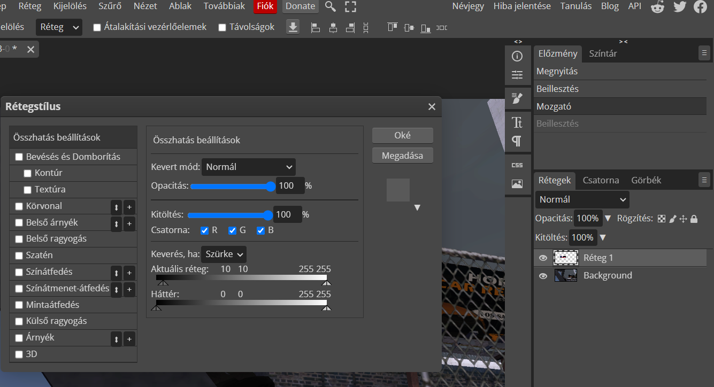
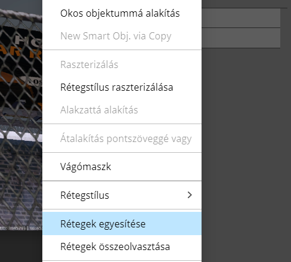
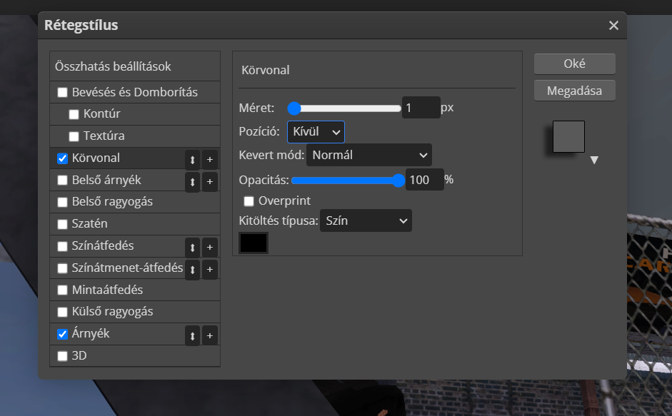
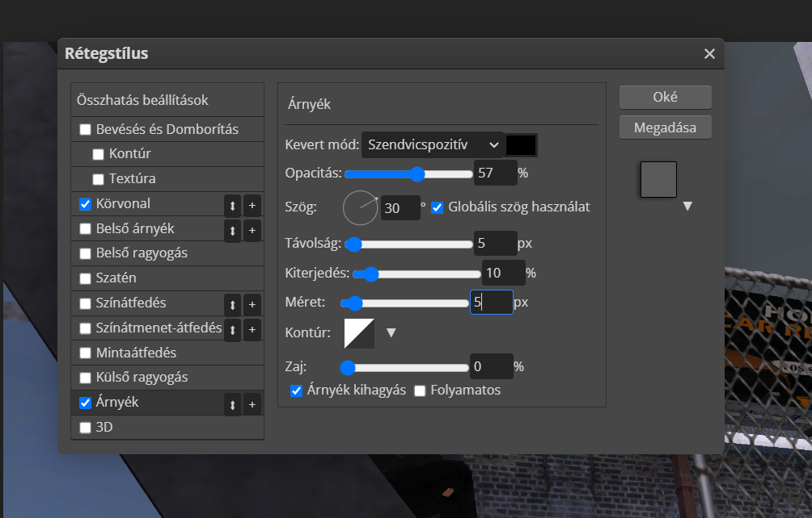

Chatlog Workspace
Hungary Life Version
Tipp: A chatlog-ot az MTA telepítési könyvtárán belül az MTA, azon belül a logs mappában találod a console.log fájlban (Alapértelmezetten: C:\Program Files (x86)\MTA San Andreas 1.6\MTA\logs).
Eredeti készítő: 𝗠𝗜𝗚𝗘𝗟#2059
Editet készítette: skyLine.7131
Használathoz egyszerűen másold be a chatlog-od, ahol pedig úgy érzed, hogy nem megfelelő a szöveg szerkessz rajta. Részletes leírást a lap alján találsz.
Betűméret (13px):
Háttérszín:
2. lépés: Nyisd meg a képmetsző alkalmazást.

3. lépés: Fotózd ki a fekete háttérrel elkészített RP log-ot. Másold ki a képet.

4. lépés: Nyisd meg a Photoshop-ot, vagy annak online ingyenes alternatíváját a Photopea-t.

5. lépés: Nyisd meg azt a képet, amelyikre rá szeretnéd illeszteni a chatlog-ot.

6. lépés: Illeszd be a kivágott képet.

7. lépés: Állitsd be a kivágott képen a tulajdonságokon belül az összhatást a képen látható módon.

8. lépés: Duplikáld a réteget, majd egyesítsd őket.

9. lépés: Az új rétegen állítds be a körvonalat 1-esre.

10. lépés: Rakj rá árnyékot is ha szeretnél a képen látható módon.

11. lépés: Élvezd és publikáld a kész képed.